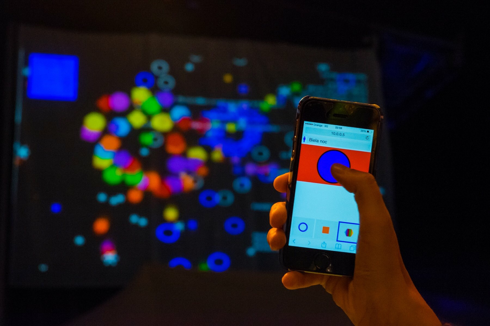
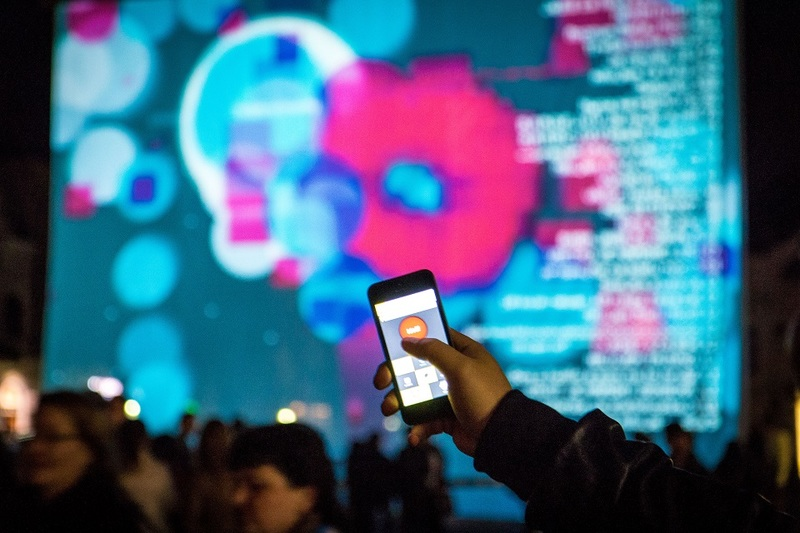

In 2015 together with Zana Petrovičová (designer) we've built an iteractive fireworks display as an art piece for the Biela noc festival.
With this piece we challenged the traditional firework aesthetic with a digital approach while also demonstrating a more clean, ecologically friendly firework display, without the pollution and potential dangers of traditional fireworks. It is our concept vision for the fireworks of the future.
We have managed to show it in 2015 on Biela noc Kosice, Pohoda Festival, and in 2016 on Biela noc Bratislava and Blik Blik Plzen.
The installation is displayed on a 16m x 12m projection screen where the fireworks can be perceived from a considerable distance. Sound is optional, e.g. we have done a silent version for the Pohoda music festival, to not disturb the other stages, the artwork is visually prominent. Otherwise the explosions are accompanied with appropriate sound effects.
The fireworks are controlled by visitor's mobile phones, where they can connect to a wifi network, load the control interface and pick and launch their fireworks, optionally also adding their name and collecting score on total launched fireworks.
